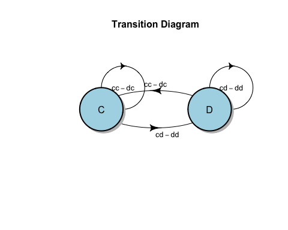
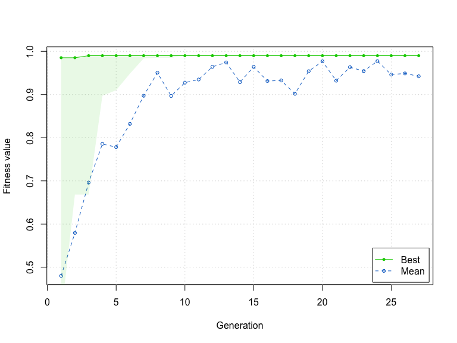

This package implements our method for automatically generating models of dynamic decision-making that both have strong predictive power and are interpretable in human terms. We use an efficient model representation and a genetic algorithm-based estimation process to generate simple deterministic approximations that explain most of the structure of complex stochastic processes. The genetic algorithm is implemented with the GA package (Scrucca 2013). Our method, implemented in C++ and R, scales well to large data sets. We have applied the package to empirical data, and demonstrated the method's ability to recover known data-generating processes by simulating data with agent-based models and correctly deriving the underlying decision models for multiple agent models and degrees of stochasticity.
A user of our package can estimate models by providing their data in a common "panel data" format. The package is designed to estimate time series classification models that use a small number of binary predictor variables and move back and forth between the values of the outcome variable over time. Larger sets of predictor variables can be reduced to smaller sets with cross-validation. Although the predictor variables must be binary, a quantitative variable can be converted into binary by division of the observed values into high/low classes. Future releases of the package may include additional estimation methods to complement genetic algorithm optimization.
# Load and attach datafsm into your R session, making its functions available:
library(datafsm)Please cite the package if you use it with the text generated by:
citation("datafsm")
#>
#> To cite datafsm in publications use:
#>
#> John J. Nay, Jonathan M. Gilligan (2015) "Data-Driven Dynamic
#> Decision Models," in L. Yilmaz et al. (eds.), Proc. 2015 Winter
#> Simulation Conf.
#>
#> A BibTeX entry for LaTeX users is
#>
#> @InProceedings{,
#> title = {Data-Driven Dynamic Decision Models},
#> author = {John J. Nay and Jonathan M. Gilligan},
#> booktitle = {Proceedings of the 2015 Winter Simulation Conference},
#> year = {2015},
#> editor = {L. Yilmaz and W.K.V. Chan and I. Moon and T.M.K. Roeder and C. Macal and M. Rosetti},
#> }Fake Data Example
To quickly show it works, we can create fake data. Here, we generate 1000 repetitions of a ten-round game in which each player starts by making a random move, and in subsequent rounds, one player follows a "tit-for-tat" strategy while the other one follows a "noisy tit-for-tat" strategy that's equivalent to tit-for-tat, except that with a 10% probability the player will make a random move.
cdata <- data.frame(period = rep(1:10, 1000),
outcome = NA,
my.decision1 = NA,
other.decision1 = NA)
#
# Prisoner's dilemma
#
pd_outcome <- function(player_1, player_2) {
#
# 1 = C
# 2 = D
#
player_1 + 1
}
tit_for_tat <- function(last_round_self, last_round_opponent) {
last_round_opponent
}
noisy_tit_for_tat <- function(last_round_self, last_round_opponent) {
if (runif(1,0,1) <= 0.1) {
sample(0:1,1)
} else {
last_round_opponent
}
}
for (i in seq_along(cdata$period)) {
if (cdata$period[i] == 1) {
my.decision <- sample(0:1,1)
other.decision <- sample(0:1,1)
} else{
my.last <- my.decision
other.last <- other.decision
my.decision <- tit_for_tat(my.last, other.last)
other.decision <- noisy_tit_for_tat(other.last, my.last)
}
cdata[i,-1] <- c(pd_outcome(my.decision, other.decision), my.decision, other.decision)
}The only required argument of the main function of the package, evolve_model, is a data.frame object, which must have 3-5 columns. The first two columns must be named "period" and "outcome" (period is the time period that the outcome action was taken). The remaining one to three columns are predictors, and may have arbitrary names. Each row of the data.frame is an observational unit, an action taken at a particular time and any relevant variables for that time. All of the (3-5 columns) should be named. The period and outcome columns should be integer vectors --- e.g. c(1,2,1) --- and the columns with the predictor variable data should be logical vectors --- e.g. c(TRUE, FALSE, FALSE) --- or vectors that can be coerced to logical with as.logical().
Here are the first eleven rows of this fake data:
| period | outcome | my.decision1 | other.decision1 |
|---|---|---|---|
| 1 | 1 | 0 | 1 |
| 2 | 2 | 1 | 0 |
| 3 | 1 | 0 | 1 |
| 4 | 2 | 1 | 0 |
| 5 | 1 | 0 | 1 |
| 6 | 2 | 1 | 0 |
| 7 | 1 | 0 | 1 |
| 8 | 2 | 1 | 0 |
| 9 | 1 | 0 | 1 |
| 10 | 2 | 1 | 0 |
| 1 | 2 | 1 | 1 |
We can estimate a model with that data. evolve_model uses a genetic algorithm to estimate a finite-state machine (FSM) model, primarily for understanding and predicting decision-making. This is the main function of the datafsm package. It relies on the GA package for genetic algorithm optimization. We chose to use a GA because GAs perform well in rugged search spaces to solve integer optimization problems, are a natural complement to our binary representation of FSMs, and are easily parallelized.
evolve_model takes data on predictors and data on the outcome and automatically creates a fitness function that takes training data, an action vector that evolve_model generates, and a state matrix evolve_model generates as input and returns numeric vector whose length is the number of rows in the training data. evolve_model then computes a fitness score for that potential solution FSM by comparing it to the provided outcome in the real training data. This is repeated for every FSM in the population and then the probability of selection for the next generation is proportional to the fitness scores. If the argument cv is set to TRUE the function will call itself recursively while varying the number of states inside a cross-validation loop in order to estimate the optimal number of states, then it will set the number of states to that optimal number and estimate the model on the full training set.
If the argument parallel is set to TRUE, then these evaluations are distributed across the available processors of the computer using the doParallel functions; otherwise, the evalulations of fitness are conducted sequentially. Because this fitness function that evolve_model creates must loop through all the training data everytime it is evaluated and we need to evaluate many possible solution FSMs, the fitness function is implemented in C++ to improve its performance.
res <- evolve_model(cdata)evolve_model evolves the models on training data and then, if a test set is provided, uses the best solution to make predictions on test data. Finally, the function returns the GA object and the decoded version of the best string in the population. Formally, the function return an S4 object with slots for:
-
callLanguage from the call of the function. -
actionsNumeric vector with the number of actions. -
statesNumeric vector with the number of states. -
GAS4 object created byga()from theGApackage. -
state_matNumeric matrix with rows as states and columns as predictors. -
action_vecNumeric vector indicating what action to take for each state. -
predictiveNumeric vector of length one with test data accuracy if test data was supplied; otherwise, a character vector with a message that the user should provide test data for better estimate of generalizable performance. -
varImpNumeric vector with length equal to the number of columns in the state matrix, containing relative importance scores for each predictor. -
timingNumeric vector length one containing the total elapsed time it tookevolve_modelto execute. -
diagnosticsCharacter vector length one, designed to be printed withbase::cat().
Use the summary and plot methods on the output of the evolve_model() function:
summary(res)
#>
#> Gentic Algorithm Settings:
#> Population size = 75
#> Number of generations = 150
#> Elitism = 4
#> Crossover probability = 0.8
#> Mutation probability = 0.1
#>
#> Finite State Machine Settings:
#> Actions = 2
#> States = 2
#>
#> Results:
#>
#> Iterations For This Run = 31
#> Training Data Fitness Function Value = 0.951
#> Test Data Fitness Function Value = No test data provided. Provide some to get more accurate estimation of generalization power.
#>
#> (Bit String Form) of Solution:
#> x1 x2 x3 x4 x5 x6 x7 x8 x9 x10
#> 0 1 0 0 1 0 1 0 1 0
#>
#> State Matrix of Solution:
#> my.decision1FALSE:other.decision1FALSE
#> [1,] 1
#> [2,] 1
#> my.decision1TRUE:other.decision1FALSE
#> [1,] 2
#> [2,] 2
#> my.decision1FALSE:other.decision1TRUE
#> [1,] 1
#> [2,] 1
#> my.decision1TRUE:other.decision1TRUE
#> [1,] 2
#> [2,] 2
#>
#> Action Vector of Solution:
#> [1] 1 2
#>
#> Variable Importance:
#> my.decision1FALSE:other.decision1FALSE
#> 52.6
#> my.decision1TRUE:other.decision1FALSE
#> 82.1
#> my.decision1FALSE:other.decision1TRUE
#> 81.9
#> my.decision1TRUE:other.decision1TRUE
#> 100.0
plot(res, action_label = c("C", "D"), transition_label = c('cc','cd','dc','dd'))
The diagram shows that evolve_model recovered a tit-for-tat model in which the player in question ("me") mimics the last action of the opponent.
Use the estimation_details method on the output of the evolve_model() function:
suppressMessages(library(GA))
plot(estimation_details(res))
Documentation for evolve_model
Check out the documentation for the main function of the package to learn about all the options:
?evolve_model
#> Use a Genetic Algorithm to Estimate a Finite-state Machine Model
#>
#> Usage:
#>
#> evolve_model(data, test_data = NULL, drop_nzv = FALSE,
#> measure = c("accuracy", "sens", "spec", "ppv"), states = 2, cv = FALSE,
#> max_states = 3, k = 2, actions = NULL, seed = NULL, popSize = 75,
#> pcrossover = 0.8, pmutation = 0.1, maxiter = 50, run = 25,
#> parallel = FALSE, priors = NULL, verbose = TRUE)
#>
#> Arguments:
#>
#> data: data.frame that has columns named "period" and "outcome"
#> (period is the time period that the outcome action was
#> taken), and the rest of the columns are predictors, ranging
#> from one to three predictors. All of the (3-5 columns) should
#> be named. The period and outcome columns should be integer
#> vectors and the columns with the predictor variable data
#> should be logical vectors ('TRUE, FALSE'). If the predictor
#> variable data is not logical, it will coerced to logical with
#> 'base::as.logical()'.
#>
#> test_data: Optional data.frame that has "period" and "outcome" columns
#> and rest of columns are predictors, ranging from one to three
#> predictors. All of the (3-5 columns) should be named. Outcome
#> variable is the decision the decision-maker took for that
#> period. This data.frame should be in the same format and have
#> the same order of columns as the data.frame passed to the
#> required 'data' argument.
#>
#> drop_nzv: Optional logical vector length one specifying whether
#> predictors variables with variance in provided data near zero
#> should be dropped before model building. Default is 'FALSE'.
#> See 'caret::nearZeroVar()', which calls: 'caret::nzv()'.
#>
#> measure: Optional length one character vector that is either:
#> "accuracy", "sens", "spec", or "ppv". This specifies what
#> measure of predictive performance to use for training and
#> evaluating the model. The default measure is '"accuracy"'.
#> However, accuracy can be a problematic measure when the
#> classes are imbalanced in the samples, i.e. if a class the
#> model is trying to predict is very rare. Alternatives to
#> accuracy are available that illuminate different aspects of
#> predictive power. Sensitivity answers the question, `` given
#> that a result is truly an event, what is the probability that
#> the model will predict an event?'' Specificity answers the
#> question, ``given that a result is truly not an event, what
#> is the probability that the model will predict a negative?''
#> Positive predictive value answers, ``what is the percent of
#> predicted positives that are actually positive?''
#>
#> states: Optional numeric vector with the number of states. Default is
#> '2'.
#>
#> cv: Optional logical vector length one for whether
#> cross-validation should be conducted on training data to
#> select optimal number of states. This can drastically
#> increase computation time because if 'TRUE', it will run
#> evolve_model k*max_states times to estimate optimal value for
#> states. Ties are broken by choosing the smaller number of
#> states. Default is 'FALSE'.
#>
#> max_states: Optional numeric vector length one only relevant if
#> 'cv==TRUE'. It specifies how up to how many states that
#> cross-validation should search through. Default is '3'.
#>
#> k: Optional numeric vector length one only relevant if cv==TRUE,
#> specifying number of folds for cross-validation.
#>
#> actions: Optional numeric vector with the number of actions. If not
#> provided, then actions will be set as the number of unique
#> values in the outcome vector.
#>
#> seed: Optional numeric vector length one.
#>
#> popSize: Optional numeric vector length one specifying the size of the
#> GA population. A larger number will increase the probability
#> of finding a very good solution but will also increase the
#> computation time. This is passed to the GA::ga() function of
#> the *GA* package.
#>
#> pcrossover: Optional numeric vector length one specifying probability
#> of crossover for GA. This is passed to the GA::ga() function
#> of the *GA* package.
#>
#> pmutation: Optional numeric vector length one specifying probability of
#> mutation for GA. This is passed to the GA::ga() function of
#> the *GA* package.
#>
#> maxiter: Optional numeric vector length one specifying max number of
#> iterations for stopping the GA evolution. A larger number
#> will increase the probability of finding a very good solution
#> but will also increase the computation time. This is passed
#> to the GA::ga() function of the *GA* package. 'maxiter' is
#> scaled by how many parameters are in the model: 'maxiter <-
#> maxiter + ((maxiter*(nBits^2)) / maxiter)'.
#>
#> run: Optional numeric vector length one specifying max number of
#> consecutive iterations without improvement in best fitness
#> score for stopping the GA evolution. A larger number will
#> increase the probability of finding a very good solution but
#> will also increase the computation time. This is passed to
#> the GA::ga() function of the *GA* package.
#>
#> parallel: Optional logical vector length one. For running the GA
#> evolution in parallel. Depending on the number of cores
#> registered and the memory on your machine, this can make the
#> process much faster, but only works for Unix-based machines
#> that can fork the processes.
#>
#> priors: Optional numeric matrix of solutions strings to be included
#> in the initialization. User needs to use a decoder function
#> to translate prior decision models into bits and then provide
#> them. If this is not specified, then random priors are
#> automatically created.
#>
#> verbose: Optional logical vector length one specifying whether helpful
#> messages should be displayed on the user's console or not.
#>
#> Details:
#>
#> This is the main function of the *datafsm* package. It relies on
#> the *GA* package for genetic algorithm optimization.
#> 'evolve_model' takes data on predictors and data on the outcome.
#> It automatically creates a fitness function that takes the data,
#> an action vector 'evolve_model' generates, and a state matrix
#> 'evolve_model' generates as input and returns numeric vector of
#> the same length as the 'outcome'. 'evolve_model' then computes a
#> fitness score for that potential solution FSM by comparing it to
#> the provided 'outcome'. This is repeated for every FSM in the
#> population and then the probability of selection for the next
#> generation is proportional to the fitness scores. The default is
#> also for the function to call itself recursively while varying the
#> number of states inside a cross-validation loop in order to
#> estimate the optimal number of states.
#>
#> If parallel is set to TRUE, then these evaluations are distributed
#> across the available processors of the computer using the
#> *doParallel* package, otherwise, the evalulations of fitness are
#> conducted sequentially. Because this fitness function that
#> 'evolve_model' creates must loop through all the data everytime it
#> is evaluated and we need to evaluate many possible solution FSMs,
#> the fitness function is implemented in C++ so it is very fast.
#>
#> 'evolve_model' uses a stochastic meta-heuristic optimization
#> routine to estimate the parameters that define a FSM model.
#> Generalized simulated annealing, or tabu search could work, but
#> they are more difficult to parallelize. The current version uses
#> the *GA* package's genetic algorithm because GAs perform well in
#> rugged search spaces to solve integer optimization problems, are a
#> natural complement to our binary string representation of FSMs,
#> and are easily parallelized.
#>
#> This function evolves the models on training data and then, if a
#> test set is provided, uses the best solution to make predictions
#> on test data. Finally, the function returns the GA object and the
#> decoded version of the best string in the population. See ga_fsm
#> for the details of the slots (objects) that this type of object
#> will have.
#>
#> References:
#>
#> Luca Scrucca (2013). GA: A Package for Genetic Algorithms in R.
#> Journal of Statistical Software, 53(4), 1-37. URL
#> http://www.jstatsoft.org/v53/i04/.Acknowledgements
This work is supported by U.S. National Science Foundation grants EAR-1416964 and EAR-1204685.
Session Info
sessionInfo()
#> R version 3.2.2 (2015-08-14)
#> Platform: x86_64-apple-darwin13.4.0 (64-bit)
#> Running under: OS X 10.10.5 (Yosemite)
#>
#> locale:
#> [1] en_US.UTF-8/en_US.UTF-8/en_US.UTF-8/C/en_US.UTF-8/en_US.UTF-8
#>
#> attached base packages:
#> [1] stats graphics grDevices utils datasets methods base
#>
#> other attached packages:
#> [1] GA_2.2 iterators_1.0.7 foreach_1.4.2 datafsm_0.1.0
#>
#> loaded via a namespace (and not attached):
#> [1] Rcpp_0.12.0 formatR_1.2 nloptr_1.0.4
#> [4] plyr_1.8.3 highr_0.5 tools_3.2.2
#> [7] digest_0.6.8 lme4_1.1-8 evaluate_0.7.2
#> [10] gtable_0.1.2 nlme_3.1-121 lattice_0.20-33
#> [13] mgcv_1.8-7 Matrix_1.2-2 yaml_2.1.13
#> [16] parallel_3.2.2 SparseM_1.7 brglm_0.5-9
#> [19] proto_0.3-10 BradleyTerry2_1.0-6 stringr_1.0.0
#> [22] knitr_1.10.5 gtools_3.5.0 stats4_3.2.2
#> [25] grid_3.2.2 caret_6.0-52 nnet_7.3-10
#> [28] diagram_1.6.3 rmarkdown_0.6.1 minqa_1.2.4
#> [31] ggplot2_1.0.1 reshape2_1.4.1 car_2.0-26
#> [34] magrittr_1.5 scales_0.2.5 codetools_0.2-14
#> [37] htmltools_0.2.6 MASS_7.3-43 splines_3.2.2
#> [40] pbkrtest_0.4-2 shape_1.4.2 colorspace_1.2-6
#> [43] quantreg_5.11 stringi_0.5-5 doParallel_1.0.8
#> [46] munsell_0.4.2